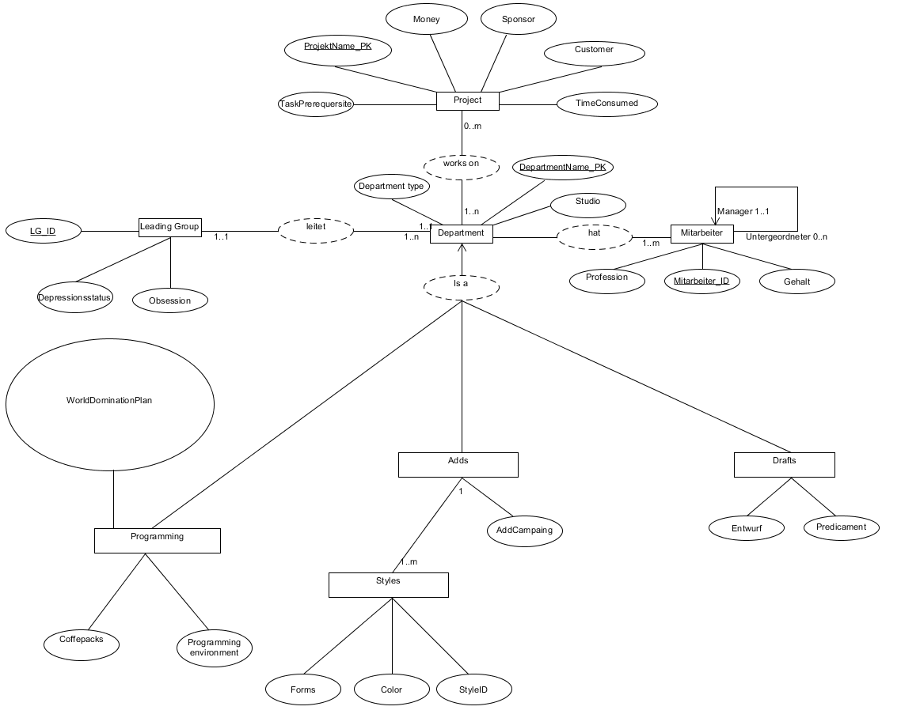

GI Gaming Company Databank
ER-Modell

Relationsmodell:
Project{ ProjektName_pk, Money, TimeConsumed, Sponsor, Customer, TaskPrerequsite, Department_ID_fk#}
Mitarbeiter{Mitarbeiter_ID_pk, profession, gehalt, Manager_ID, Untergeordneter_ID, Department_ID_fk#}
Leading_Group{LG_ID_pk, obsession, depressionsstatus}
Department{Department_ID_pk, Studio, DepartmentTyp, LG_ID_FK#}
ProgrammingD{ Department_ID_pk, Studio, LG_ID_FK#, coffee, programmingEnvironment}
AddsD{ Department_ID_pk, Studio, LG_ID_FK#, Style, AddCampaing}
DraftsD{ Department_ID_pk, Studio, LG_ID_FK#, Entwurf, predicament}
StylesD{ StyleID_pk, Forms, Color, AddsD_ID#}
ProjektDepartment{Department_ID_FK#, Project_ID_FK#}
User-Story:
The Game Company is a small company with about a hundred workers in total. There are three departments.
The first department creates the draft of a game.
The second department is the developer Studio.
The third is the advertising department. They get the basic draft and some game footage to produce adds for the public. The style is predetermined and shall not change within one add.
Every department has Members. Most of them are overseen by Managers, others are managers. And some manage these managers. At the top is the leading group.
Apart from that each department also has many private Resources like intel or Data about customers, only for their department.
But there are also shared intel across the departments, like a timetable and the anticipated publication date.
Lastly there is a special leading group that overlooks and combines all the current data about the performance and options for the whole company and instructs the group managers.
All these departments exist to develop Projects. Sometimes they don’t have a project to work on and sometimes they are swept with projects in their respective departments.
Possible extensions are:
Timetable at project
Prerequisites for each department and customers wishes